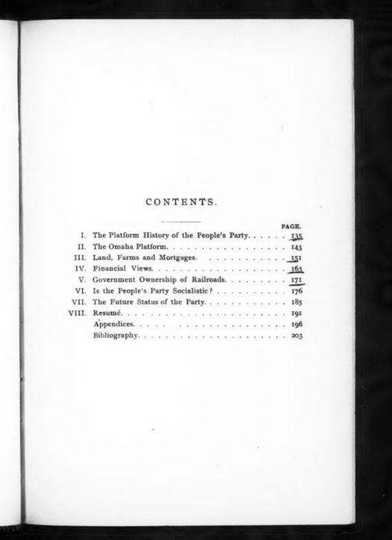

McVey, 1896: o People’s Party lido pelas suas plataformas
Leitura: 10 min
Em 1896, Frank L. McVey examinou as plataformas do People’s Party, de 1889 a Omaha, e confrontou as suas propostas de terra, hipotecas, moeda e ferrovias com os dados do censo de 1890.


A convenção de Cincinnati, em maio de 1891, abriu com o hino “America” e o Pai-Nosso. Das cerca de 1.500 pessoas presentes, 407 vinham do Kansas, 317 de Ohio e 100 de Illinois; cerca de dois terços dos estados estavam representados. Alguns líderes tentaram adiar a fundação de um partido para o ano seguinte. Foram vencidos, e o People’s Party saiu de Cincinnati com uma plataforma de doze pontos.
A cena está no primeiro capítulo de The Populist Movement, de Frank L. McVey, instrutor de economia na University of Minnesota, publicado como nº 3 do primeiro volume dos Economic Studies, em agosto de 1896. O texto, datado de 1º de junho de 1896, tem oito capítulos: a história das plataformas, a de Omaha, terra e hipotecas, finanças, ferrovias, a pergunta se o partido é socialista, o seu futuro e um resumo. Seguem-se sete apêndices, com tabelas de votos e de bancadas estaduais, e uma bibliografia de livros, revistas e jornais.
O método é ler o partido pelos seus documentos. McVey define o movimento como de classe, formado sobretudo por agricultores, com parte dos descontentes das cidades. As queixas eram preços agrícolas baixos, renda menor que antes e monopólios que esmagavam o pequeno produtor. As duas primeiras eram atribuídas à legislação financeira; a terceira, à industrial.
Como se formou o partido?
McVey liga a origem às mudanças na agricultura depois da Guerra Civil: as máquinas aumentaram a produção, os preços caíram quase sem interrupção e surgiram as organizações de agricultores, como a Grange, de 1867, a Agricultural Wheel, de 1878, e a Farmers’ Alliance, de 1879. Ele vê três estágios: a Grange, que queria educar o agricultor; a Alliance, que reunia associações independentes; e o partido.
Cinco convenções marcam a passagem. Em St. Louis, em 6 de dezembro de 1889, agricultores e Knights of Labor formaram a Farmers’ Alliance and Industrial Union, sem ainda criar um partido. Em Ocala, Flórida, em dezembro de 1890, a plataforma mudou pouco e trouxe a única demanda explícita de redução de tarifas das cinco. Vieram então Cincinnati, em 1891; St. Louis, em 22 de fevereiro de 1892, que trocou o controle pela propriedade estatal das ferrovias e acrescentou bancos postais; e Omaha, em 4 de julho de 1892, a primeira convenção de nomeação presidencial.
A proibição dos contratos futuros de grãos, uma das queixas mais antigas dos agricultores, desapareceu nos três últimos anos. Para McVey, o partido passou a ver o problema como financeiro e esperava, tomando um lado da questão monetária, tirar do campo um dos partidos antigos.
O que dizia a plataforma de Omaha?
O preâmbulo, que McVey chama de a parte mais curiosa, descreve um país à beira da ruína moral, política e material, com corrupção nas urnas e nos legislativos, imprensa subornada ou amordaçada, lares hipotecados e terra concentrada. A frase mais citada fala de duas classes.
“geramos as duas grandes classes — vagabundos e milionários” (we breed the two great classes — tramps and millionaires)
McVey diz que o quadro não pode ser comprovado e que o próprio documento se enfraquece pelo exagero; a plataforma propriamente dita, mais contida, merece atenção séria. Ele divide os pontos em menores, como tarifas, pensões, leis de contratação, jornada de oito horas e eleição direta de senadores, e maiores: moeda, prata, ferrovias e terra. A tarifa nem é nomeada. A única pista é a exigência de que as receitas fiquem limitadas às despesas necessárias do governo, que democratas e republicanos leram, cada um, como compatível com a sua doutrina. McVey explica a ambiguidade pela tensão entre operários, que associavam proteção a salários altos, e agricultores, que pagavam mais caro pelo que compravam. Também a jornada de oito horas e as restrições à imigração seriam concessões às sociedades de trabalhadores; o agricultor, que empregava mão de obra e trabalhava de doze a dezesseis horas, não teria interesse nelas.
As hipotecas esmagavam o Oeste?
O capítulo sobre terra começa pelo domínio público. Dos 1.821.700.922 acres que passaram às mãos da União, restavam em 1890, vagos, 586.216.861, menos de um terço, dos quais apenas 1,7 milhão aptos à agricultura, segundo os números que McVey reproduz. Só para ferrovias, a União e os estados concederam cerca de 171 milhões de acres. McVey reconhece abusos, como certificados emitidos antes de a ferrovia existir e terras isentas de imposto até a emissão do título, mas atribui a maior parte a leis mal feitas, não às empresas. Sobre a proibição de terras para estrangeiros, argumenta que o investidor estrangeiro fica em desvantagem diante do residente e valoriza a propriedade vizinha.
Para as hipotecas, ele confronta uma afirmação de campanha de 1894, segundo a qual os agricultores deviam de sete a oito bilhões de dólares, com a investigação do censo. Uma hipoteca, lembra, não é sinal de ruína: é capital de uns emprestado a outros, e no Oeste financiou casas, igrejas, estradas e drenagem. O perigo está nas depressões, quando os juros deixam de ser pagos e a execução derruba o valor das propriedades vizinhas.
A conclusão de McVey é que a dívida era bem menor do que se supunha e estava em condições mais favoráveis. Ele destaca que o Kansas aparece entre os estados em que a valorização permitiu pagar os juros e ao menos parte do principal. Também registra o efeito contrário da retórica: quanto mais se dizia que o Oeste estava arruinado, mais difícil ficava tomar empréstimos no Leste.
Como funcionaria o sub-tesouro?
As demandas financeiras de Omaha, que McVey considera as mais importantes, eram uma moeda nacional emitida só pelo governo, sem bancos, distribuída a um custo de no máximo 2% ao ano; cunhagem livre de prata e ouro à razão de 16 para 1; circulação de pelo menos 50 dólares por habitante; e imposto de renda progressivo. O mecanismo de distribuição era o plano de sub-tesouro da Farmers’ Alliance: o governo emitiria notas contra depósito de produtos agrícolas não perecíveis, imóveis ou manufaturas, entregando 80% do valor, e exigiria mais garantias se o valor caísse.
McVey compara o plano ao Land Bank de Massachusetts, de 1714, e lista objeções: armazéns e um exército de escriturários, um surto de preços de terra e produtos agrícolas, e a facilidade com que capitalistas comprariam safras para tomar empréstimos a 2% em vez de 4% ou 5%. Cita ainda doze projetos do senador Peffer, que somariam uma circulação de 95,15 bilhões de dólares, dez vezes e meia a moeda de todas as nações. Para ele, o papel-moeda é uma promessa de pagar, e terra não tem qualidades de dinheiro. Ele explica a demanda por mais moeda no Sul e no Oeste pela situação das regiões novas, em que o pouco dinheiro saía para comprar ferramentas e voltava devagar.
O partido era socialista?
Sobre as ferrovias, McVey descreve a hostilidade do Oeste, alimentada por tarifas altas cobradas para pagar dividendos sobre ações infladas, e as promessas de economia com a estatização. Nota que nem todos no partido acreditavam nela: o senador Allen, de Nebraska, sugerira testá-la primeiro numa das ferrovias do Pacífico. E mostra que, na prática, a reforma financeira, com a prata à frente, passou a dominar o resto.
Daí a disputa interna que ele narra: de um lado, os adeptos da prata, que queriam uma plataforma de um ponto só; de outro, os fiéis à plataforma de Omaha. Na conferência de St. Louis, em dezembro de 1894, a grande maioria reafirmou Omaha. Para responder à pergunta do capítulo, McVey compara catorze demandas de partidos socialistas com os pontos do People’s Party e conta nove correspondências próximas. Conclui que a propriedade comum e a igualdade de renda não aparecem, mas que a plataforma é socialista na tendência.
O capítulo sobre o futuro distingue partidos de princípio e partidos de sentimento, nascidos do descontentamento. Os votos de 1894 superaram os de 1892 em 430.562, um ganho de 42%, mas McVey considera o número enganoso e prevê uma existência transitória. No resumo, reconhece a sinceridade da base e credita ao partido ter levado a moeda ao debate público, embora diga que ele mais retardou do que ajudou a solução; no capítulo sobre Omaha, já considerara acertada a defesa da eleição direta de senadores. E defende a regulação estatal das ferrovias, e não a sua propriedade, como melhor solução.
Na minha leitura
Na minha leitura, o valor do estudo está menos nas conclusões do autor, que ele mesmo apresenta como julgamentos, do que no método: tratar um movimento político como um conjunto de propostas econômicas e confrontá-las com dados. O capítulo das hipotecas é o melhor exemplo. Em vez de discutir a retórica, McVey vai ao censo de 1890 e mostra a composição regional da dívida e a relação entre valorização da terra e juros.
O estudo também registra um dilema permanente das propostas de expansão monetária: o problema real de regiões novas, com pouco capital e moeda escassa na época da colheita, convive com soluções que trocam crédito por emissão. A crítica de McVey ao sub-tesouro é, no fundo, sobre lastro, custos de administração e risco de captura, questões que acompanham qualquer programa público de crédito com garantia em mercadorias.
Glossário
- Cunhagem livre (free coinage)
- direito de levar metal à Casa da Moeda e recebê-lo cunhado, sem limite de quantidade.
- 16 para 1
- razão legal de dezesseis unidades de prata para uma de ouro proposta pelos defensores da prata.
- Sub-tesouro
- plano da Farmers’ Alliance de empréstimos públicos em papel-moeda contra depósito de produtos agrícolas.
- Domínio público
- terras de propriedade da União, distribuídas por venda, doação a colonos ou concessão a ferrovias.
- Homestead Act
- lei de 1862 que doava lotes de terra pública a quem os ocupasse e cultivasse.
- Execução hipotecária
- tomada do imóvel pelo credor quando o devedor deixa de pagar.
- Moeda fiduciária (fiat money)
- dinheiro cujo valor decorre da lei, e não de metal ou lastro.
Fontes
- The Populist Movement (pp. 135–195). Internet Archive (número completo, PDF)
- Appendices (pp. 196–202). Internet Archive (número completo, PDF)
- Bibliography (pp. 203–209). Internet Archive (número completo, PDF)
- Número completo digitalizado (domínio público): Internet Archive.
Documento em domínio público (EUA, publicado antes de 1931), via JSTOR Early Journal Content e Internet Archive. Resumo e comentário do autor deste site, sem afiliação com a American Economic Association. Encontrou um erro? Escreva: a correção é publicada no próprio texto, com data.
← ES 2 · Towne, Halsey e Taylor: como pagar o trabalho pela eficiência ES 4 · Lexis, 1895: por que o bimetalismo seria um salto no escuro →